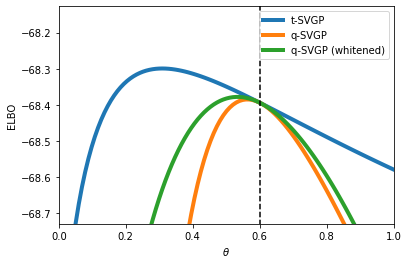

1D Classification¶
[1]:
import gpflow
import matplotlib.pyplot as plt
import numpy as np
import tensorflow as tf
from gpflow import set_trainable
from gpflow.optimizers import NaturalGradient
from tqdm import tqdm
from src.models.tsvgp import t_SVGP
2021-12-13 23:54:30.371094: W tensorflow/stream_executor/platform/default/dso_loader.cc:64] Could not load dynamic library 'libcudart.so.11.0'; dlerror: libcudart.so.11.0: cannot open shared object file: No such file or directory; LD_LIBRARY_PATH: /opt/hostedtoolcache/Python/3.7.12/x64/lib
2021-12-13 23:54:30.371128: I tensorflow/stream_executor/cuda/cudart_stub.cc:29] Ignore above cudart dlerror if you do not have a GPU set up on your machine.
[2]:
# For reproducibility
rng = np.random.RandomState(123)
tf.random.set_seed(42)
Generating toy data for classification¶
[3]:
# Simulate data
func = lambda x: np.sin(12 * x) / x
N = 100 # Number of training observations
X = rng.rand(N, 1) * 2 - 1 # X values
F = func(X) + 0.2 * rng.randn(N, 1) # Noisy Y values
Y = (F > 0).astype(float)
# GP parameters
var_gp = 0.6
len_gp = 0.5
x_grid = np.linspace(-1, 1, 100)
plt.plot(x_grid, func(x_grid))
plt.plot(X, Y, "o")
[3]:
[<matplotlib.lines.Line2D at 0x7ff97abe6390>]

Declaring classification model¶
[4]:
# =============================================== Set up models
M = 10 # Number of inducing locations
Z = np.linspace(X.min(), X.max(), M).reshape(-1, 1)
m_t = t_SVGP(
gpflow.kernels.SquaredExponential(lengthscales=len_gp, variance=var_gp),
gpflow.likelihoods.Bernoulli(),
Z,
num_data=N,
)
m_q_white = gpflow.models.SVGP(
gpflow.kernels.SquaredExponential(lengthscales=len_gp, variance=var_gp),
gpflow.likelihoods.Bernoulli(),
Z,
num_data=N,
whiten=True,
)
m_q = gpflow.models.SVGP(
gpflow.kernels.SquaredExponential(lengthscales=len_gp, variance=var_gp),
gpflow.likelihoods.Bernoulli(),
Z,
num_data=N,
whiten=False,
)
set_trainable(m_q_white.kernel.lengthscales, False)
set_trainable(m_q.kernel.lengthscales, False)
set_trainable(m_t.kernel.lengthscales, False)
2021-12-13 23:54:33.559676: W tensorflow/stream_executor/platform/default/dso_loader.cc:64] Could not load dynamic library 'libcuda.so.1'; dlerror: libcuda.so.1: cannot open shared object file: No such file or directory; LD_LIBRARY_PATH: /opt/hostedtoolcache/Python/3.7.12/x64/lib
2021-12-13 23:54:33.559712: W tensorflow/stream_executor/cuda/cuda_driver.cc:326] failed call to cuInit: UNKNOWN ERROR (303)
2021-12-13 23:54:33.559736: I tensorflow/stream_executor/cuda/cuda_diagnostics.cc:156] kernel driver does not appear to be running on this host (fv-az37-217): /proc/driver/nvidia/version does not exist
2021-12-13 23:54:33.560059: I tensorflow/core/platform/cpu_feature_guard.cc:142] This TensorFlow binary is optimized with oneAPI Deep Neural Network Library (oneDNN) to use the following CPU instructions in performance-critical operations: AVX2 AVX512F FMA
To enable them in other operations, rebuild TensorFlow with the appropriate compiler flags.
2021-12-13 23:54:33.614189: W tensorflow/python/util/util.cc:348] Sets are not currently considered sequences, but this may change in the future, so consider avoiding using them.
Training model¶
[5]:
# =============================================== run inference
lr_natgrad = 0.8
nit = 20
data = (tf.convert_to_tensor(X), tf.convert_to_tensor(Y))
print("Elbos at initial parameter")
[m_t.natgrad_step(data, lr_natgrad) for _ in range(nit)]
print("t-SVGP elbo:", m_t.elbo(data).numpy())
natgrad_opt = NaturalGradient(gamma=lr_natgrad)
training_loss = m_q.training_loss_closure(data)
training_loss_white = m_q_white.training_loss_closure(data)
# q-SVGP
variational_params = [(m_q.q_mu, m_q.q_sqrt)]
[natgrad_opt.minimize(training_loss, var_list=variational_params) for _ in range(nit)]
print("q-SVGP elbo:", -training_loss().numpy())
variational_params_white = [(m_q_white.q_mu, m_q_white.q_sqrt)]
[natgrad_opt.minimize(training_loss_white, var_list=variational_params_white) for _ in range(nit)]
print("q-SVGP (white) elbo:", -training_loss_white().numpy())
elbo = m_t.elbo(data).numpy()
Elbos at initial parameter
t-SVGP elbo: -68.39372325333751
2021-12-13 23:54:39.221774: I tensorflow/compiler/mlir/mlir_graph_optimization_pass.cc:176] None of the MLIR Optimization Passes are enabled (registered 2)
2021-12-13 23:54:39.225785: I tensorflow/core/platform/profile_utils/cpu_utils.cc:114] CPU Frequency: 2593905000 Hz
q-SVGP elbo: -68.393717111308
q-SVGP (white) elbo: -68.39371711130802
Computing elbos for new parameter grid¶
[6]:
# ======================================== ELBO for different theta
N_grid = 100
llh_qsvgp = np.zeros((N_grid,))
llh_qsvgp_white = np.zeros((N_grid,))
llh_tsvgp = np.zeros((N_grid,))
vars_gp = np.linspace(0.05, 1.0, N_grid)
for i, v in enumerate(tqdm(vars_gp)):
m_t.kernel.variance.assign(tf.constant(v))
llh_tsvgp[i] = m_t.elbo(data).numpy()
m_q.kernel.variance.assign(tf.constant(v))
llh_qsvgp[i] = m_q.elbo(data).numpy()
m_q_white.kernel.variance.assign(tf.constant(v))
llh_qsvgp_white[i] = m_q_white.elbo(data).numpy()
print("done.")
100%|██████████| 100/100 [00:08<00:00, 11.78it/s]
done.
[7]:
# ======================================== Visualize
plt.figure()
plt.plot(vars_gp, llh_tsvgp, label="t-SVGP", linewidth=4)
plt.plot(vars_gp, llh_qsvgp, label="q-SVGP", linewidth=4)
plt.plot(vars_gp, llh_qsvgp_white, label="q-SVGP (whitened)", linewidth=4)
plt.vlines(
var_gp,
ymin=llh_tsvgp.min() - 10,
ymax=llh_tsvgp.max() + 10,
color=[0, 0, 0, 1.0],
linewidth=1.5,
linestyle="dashed",
)
plt.xlim([0.0, 1.0])
plt.ylim(
[
llh_tsvgp.min() - 0.0 * (llh_tsvgp.max() - llh_tsvgp.min()),
llh_tsvgp.max() + 0.4 * (llh_tsvgp.max() - llh_tsvgp.min()),
]
)
plt.legend()
plt.xlabel("$\\theta$")
plt.ylabel("ELBO")
plt.show()
